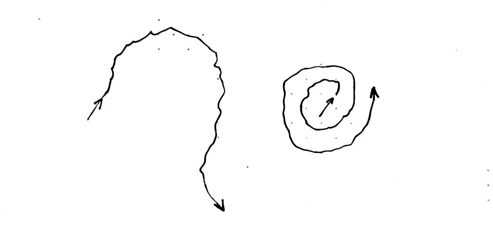

6
Fill
In past few problems we solved, including sum, fib and numOfWays, we have seen the usage of the recursion in getting pieces of partial answer from recursive calls. And we don't get our final answer until the root call returns.
Recursion is a general execution. Similar to a for loop, it can be quite versatile and fit into any algorithm as you think fit. One of grand theme is that, instead of getting partial answers from the call directly, the recursion can be used to build partial answers by entering the call. And we don't get our final answer until the call reaches deep deep down to wherever it thinks the answer should be. This is a one field of study, called backtracking. Let's see one example of it in this chapter, the bucket fill problem.
Bucket fill
Say we have a map with m rows and n columns in two dimensional array.
> map[][] =
############################
S.##....###......######.#..#
#.##.##.##.....#.#......#..#
#....##.##..#..#.#......#..#
#..#######..################
#.#########.##...###...##..#
#...........####.......#####
############################
Start from a location S, we want to find to fill all the empty space. We can't go through walls, denoted by #. The empty space is connected via four directions, either up, down or left and right, diagonal fill is not allowed.
Let's try to figure it out using our hands then. We are at location O with position [i, j]. We have four directions to pick if all directions shows as empty spaces.
.......
.. ^ ..
.< o >.
.. v ..
.......
Except when we hit one of boundaries in the following case.
...#
.#.#
.#.o
####
The right to our current position falls outside of our map, that will be a wrong pick. And the top and bottom to our position are walls, that will be no either. So the only viable way is to go left.
We also don't want to visit the location we have visited before, since we all know that'll give us endless recursion. So imagine the left to our current position is the way we come from, then we can't go left either.
Here're our boundaries of this problem written in recursion.
visit(i, j)
--> if [i,j] is outside of map -> return
--> if map[i][j] == '#' -> return
--> if [i,j] has been visited -> return
You might wonder at this point? What is the goal of our recursion?
The goal is to find out all the empty space we can go, therefore we're doing it, except we just need to store them so that we can display the filled spaces later.
Say we store them in a dictionary visited. It'll become clear why we choose dictionary than an array shortly after we write the code. We'll collect visited location as we move forward in the map.
That's it. Let's code it.
const dirs = [
[ 0, 1], // down
[ 1, 0], // right
[ 0, -1], // up
[-1, 0] // left
]
function bucketFill = (map, start) {
const m = map.length
const n = map[0].length
let visited = {}
function visit(i, j) {
visited[[i, j]] = true
for (let k = 0; k < 4; k++) {
let ni = i + dirs[k][0]
let nj = j + dirs[k][1]
if (ni < 0 || ni > m - 1 ||
nj < 0 || nj > n - 1) continue
if (arr[ni][nj] == '#') continue
if (visited([ni, nj])) continue
visit(ni, nj)
}
}
let si = start[0], sj = start[1]
visit(si, sj)
return visited
}First thing to notice is that the problem isn't trivial, but our code isn't long either.
We continue to use two-functions setup. The outer function bucketFill has map and start as arguments. map is a two dimensional array holding the map that needs to be filled, and start is a two elements array holding the position where we start teh fill. We then define couple of utilities variables such as the dimension of the map, m x n as well as the dictionary visited to store all visited locations. Remember all outer variables can be accessed in the inner functions. We are doing some preparation work to make our life easier later.
The inner function visit has i and j as arguments. Basically we want to visit a location each time. Once we enter a visit instance, we mark the location visited by using the dictionary.
Javascript dictionary can take an object as a key. Behind the scene, just imagine the object is converted into a string.
After the location is visited, a for loop is created to find possible new ways by iterating through four directions. For each possible direction we calculate the future position [ni, nj] with the help of utility array dirs. Before it goes to the future position, we make sure it doesn't fall outside of the map, it's not a wall, and it has not been visited in the past. If all conditions pass, it then take the future location as valid one and visit it right away. Otherwise, it bails out by skipping it and moving to next possible direction.
Though the logic appears to be verbose when we describe it, it actually is not complicated at all, simply because this pretty much behaves like as if we solve this problem by hand. It's more like we just write down our thoughts into a computer code.
Before we run the code and fill the map. Let's talk about the code pattern.
function bucketFill = (map, start) {
let visited = {}
...A
function visit(i, j) {
...
}
...B
return visited
}The code might appear strange to you since the function visit is sandwiched by section A and B. Why do we write like that? Let me write it a bit differently.
function bucketFill = (map, start) {
let visited = {}
const visit = (i, j) => {
...
}
return visited
}I define the function using a variable with the help of arrow syntax. And I deliberately deleted the section A and B and extra blank lines. What do you see?
Yes, the function visit is nothing more than a variable or statement or whatever you call a coding element. Where you want to put it is entirely up to your coding logic. In fact, a function is an object in lots of languages now, include Javascript.
Arrow function and regular function are two different ways of writing a function. They are slightly different but overall they achieve the same function definition.
That’s it! I can't wait to run the code.
Paint before it dries
Here’s the output with visited area marked by O.
############################
oo##oooo###oooooo######.#..#
#o##o##o##ooooo#o#......#..#
#oooo##o##oo#oo#o#......#..#
#oo#######oo################
#o#########o##...###...##..#
#ooooooooooo####.......#####
############################
Congratulations! Please spend some time in enjoying your work.
Our paint algorithm seems quite efficient as well. How so?
From fib and climb, we have learned that with memorization, the algorithm can go as fast as O(n), but have we implemented memorization yet?
Yes, we actually did. Really? Yes, the dictionary visited serves two purposes in our code: one, to remember our solution along the way; two, to fullfil the memorization implementation. One stone for two birds.
This means, the algorithm runs in the order of O(n). But wait a second, what is n here? We happen to have our own n defined which is the height of the map. But the height is not the correct size of our algorithm. Let's take some time to think about the size of our algorithm here.
Back to a simpler case, to find out the length (or size) of the problem, we can try to visualize how it finds the boundary from the root.
5 5
4 4,3|
3 3,2|
2 2,1|
1 1,0|
0 0|
- -
sum fib
Taking sum as an example, it goes from the root 5 all the way down to 0 where we use a bar to indicate it's a boundary. Similarly, fib goes from 5 to 0, though there're side branches, but with memorization, they are also implemented as boundaries.
By taking look at these two cases, we can fairly quick get an estimate, if not accurate enough, the length of the problem, which is n, the starting argument. Now let's turn back to our bucket fill problem.
-┐
|
| ┌-->
| |
└---------┘
As long as there's a pathway which is open for visit, the tip of the recursion goes forward. Imagine there's a extremely twisted path inside the map which covers entire map, in that case, the longest length we can ever get will be O(m*n). This doesn't mean we will get this length for each map, the running time analysis tries to bound the order.
So now we can take a look at why this method is called backtracking.
At each location [i, j], we have four choices, if we don't hit any boundary, we eventually need to go through all of them. In a way, you can call this brutal force. If this repeats consistently, without memorization, we could be facing up to O(4^n) running time. However practically we would never get to this bad. Since for each location we are going to visit, there's a chance it's either a wall, or visited or outside of the map. These locations are referred as boundary in the context of the recursion, because it force the code to return.
In the context of the problem solving using backtracking, they are also referred as backtracks. It means, it ask the code to go back because the possibilities of going forward is eliminated due to the constraint of the problem. We could have only three directions available, or two, or one. Thus the number of possibilities can be reduced. This really helps the running time, if the possibilities is reduced to one, the running time become O(n) temporarily.
The number of choices can even be reduced to zero! That means there's no direction to go from this location. Just give you one example.
ooo#
o#o#
o#.#
####
If we are at ., when looking around, it can't go left or right or down. And it can't go up either because that's where it comes from. This is a dead end, we say. What do we do? We go back, nothing else. This also happens to the recursion. It simply make a return.
Backtracks, or dead ends, is quite rewarding in the context of recursion (or backtracking). Since only then, we know the algorithm can possibly work out! Only at a backtrack, we know either we reach our goal by comparing to the problem requirement, or there's simply no valid answer beyond this point. Either way it's a win-win situation.
Knowing there's no way to win can be quite cost effective in reaching your goal.
A key to the success of a backtracking setup is to identify these backtracks. Without knowing them, the algorithm is comparable to a brutal force algorithm. With their discovery, it can suddenly, temporarily, or even permanently drop the computation down from O(4^n) to O(1).
In the problem of solving climbing stairs, numOfWays actually shows us snippet of this effect, the closer to the answer, there's a pattern emerging as, the less amount of possible opportunities. Of course, the distance here is all relative. This is just another example why finding backtracks can be so effective in solving problems.
Before we move on to another topic, I want to add that, the function instance returns without carrying a value is also part of features of backtracking. Since the solution isn't returned from the call, instead it's built gradually through a collector, in our case the visited dictionary.
Conversion to iterative setup
Let's be honest, even we have showed that the running time of our algorithm is O(m*n), what happens when m*n reaches 10000? Isn't it above our call stack limit? Yes it will if it reaches. In that case, we need to convert our code into iterative setup.
In general converting a recursion algorithm isn’t a common task. Because recursion is quite unique, either you find it useful to apply it or simply not use it, you don't convert it. However, here we do have decent incentive doing it, since then we don't want to be bothered by whether the length of the problem ever exceeds the call stack limit. Suppose we want to solve very large problem in the scale of a million or a trillion.
Luckily for this problem, the conversion to iterative setup is straightforward. Let’s take a look how the new code look like.
function bucketFill = (map, start) {
const m = map.length
const n = map[0].length
let visited = {}
let stack = [start]
while (stack.length) {
let [i, j] = heap.pop()
visited[[i, j]] = true
for (let k = 0; k < 4; k++) {
let ni = i + dirs[k][0]
let nj = j + dirs[k][1]
if (ni < 0 || ni > m - 1 ||
nj < 0 || nj > n - 1) continue
if (visited([ni, nj])) continue
if (arr[ni][nj]) continue
stack.push([ni, nj])
}
}
return visited
}First impression the code isn't too different, and amazingly it's a bit shorter without the declaration space for a recursive function. Instead it has been replaced with a iterative process using a while loop.
Before we enter the loop, we create an array named stack. We name it for a reason, because we intend to simulate the way how call stack handles the call, at least in the basic level. The stack carries the signature of each "instance". We still call it instance here but we should know there's no function instance setup any more.
The signature is the name of the instance, or the arguments of the instance, in our case, it's the location we are going to visit. If we add an element to the stack, that means we'd like to visit in the future. The stack provides us a list-like storage so that we can process the launching of instance one by one.
Once we enter the loop, if the stack is not empty, we take one of the element, assign to the position [i, j] and go through the same process (or code) as used to be. The only difference is that, since we don't have the recursive function, when we want to skip the instance, we use continue instead of return; when we want to add a instance, we don't call it, instead we add it to the list.
To kick off the loop, all we need to do is to add the first element to the list.
let stack = [start];That’s it, with the new iterative setup, rest assure that we can bucket fill a large map.
Depth first search
Ever have any doubts on this line in the iterative setup?
let [i, j] = heap.pop();Really, the recursion can be replaced by simply popping an element from an array? Well, yes or no.
In short, of course, recursion can't be replaced that easily. Otherwise I wouldn't think people will use the recursion way again. To understand this better, we need to take a look how our problem visits locations.
o
------|-----
1 2 3 4
-----|-----
11 12 13 14
In the recursion version, say at one location, there're four valid choices, all directions are good. It picks the first one, and gets into another instance, and finds four valid choices, and pick the first one and continue.
This visit order, in computer science, is referred as depth first search (DFS). It means it tries to go as deep as possible before going back. The whole visiting sequence would be, for the above case, [o, 1, 11, 12, 13, 14, 2, 3, 4]. If you figure this out by yourself, you are really good at traversal.
Let's now take a look at the iterative version. Let me remind you array.pop pops the element from the end of the array. Let's do it slowly.
0. stack = [o]
1. stack = [1,2,3,4]
2. stack = [1,2,3,11,12,13,14]
3. stack = [1,2,3,11,12,13]
4. stack = [1,2,3,11,12]
Before we enter the loop, the stack starts with one element. Inside the first iteration, it pops out one, and adds four valid elements. Same thing happens to the second iteration, it pops out the last one and adds four more. Starting next iteration, things change a bit, because there's no more valid elements to add. So every turn, one existing one gets popped out. The visit sequence is [o, 4, 14, 13, 12, 11, 3, 2, 1].
For a second, the visit sequences are very different.
o, 1, 11, 12, 13, 14, 2, 3, 4 // recursion
o, 4, 14, 13, 12, 11, 3, 2, 1 // array.pop
However, if we spend a bit more time looking at both, you might find out at least each element is in the same location. For instance, if you look at the second element, both 1 and 4 are from the second location, and both 11 and 14 are from the third location, and etc.
for (let k = 3; k >= 0; k--) {
let ni = i + dirs[k][0]
let nj = j + dirs[k][1]
...
stack.push([ni, nj])
}if we make a small change, when going through all directions, we go through the list backwards comparing to the recursion version, let's take a look the stack.
0. stack = [o]
1. stack = [4,3,2,1]
2. stack = [4,3,2,14,13,12,11]
3. stack = [4,3,2,14,13,12]
4. stack = [4,3,2,14,13]
With this change, the visit sequence should look identical to the recursion.
o, 1, 11, 12, 13, 14, 2, 3, 4 // recursion
o, 1, 11, 12, 13, 14, 2, 3, 4 // array.pop, loop backward
Great! In the end, we make sure our two versions are doing similar things. But wait, does it really matter? No, it doesn't.
Because they are all following DFS order, which is to reach the deepest location first. This can be a bit obvious if you randomize the dirs array, you should still get similar result. The sequence can be different, so we don't know which location gets visited first, but in the end, they all finish the problem in DFS fashion.
Breath first search
Since we already mentioned the depth first search, we probably should mention breath first search (BFS) as well, at least briefly, and see how it effects our problem.
In our iterative setup, in each iteration, we pop an element from the end of the list. We also could remove it from the beginning of the list.
function bucketFill = (map, start) {
const m = map.length
const n = map[0].length
let visited = {}
let queue = [start]
while (queue.length) {
let [i, j] = queue.shift()To remove element from the beginning, Javascript uses the method name shift. Notice, I also change the name of our list from stack to queue.
A stack is a list that follows last-in-first-out (LIFO) principle; whereas a queue follows first-in-first-out (FIFO). In real life, a waiting list is basically a queue, we should be very familiar what a queue is.
By switching to use a queue instead of a stack, we are asking the visit order to follow the order we visit each locations. For instance, if we add four directions to the queue, then we expect them to be processed one after another one as a group. Let's take a look at the visit sequence.
0. queue = [o]
1. queue = [1,2,3,4]
2. queue = [2,3,4,11,12,13,14]
3. queue = [3,4,11,12,13,14]
4. queue = [4,11,12,13,14]
If we trace that, we can see the visit sequence can be very different from the recursion one.
o, 1, 11, 12, 13, 14, 2, 3, 4 // recursion
o, 1, 2, 3, 4, 11, 12, 13, 14 // queue.shift
Indeed, this time they are very different.

fig. Depth first vs Breath first
Depth first, as we have seen using the stack implementation, reaches as far as it can quickly; whereas Breath first, as seen using the queue implementation circles around its neighbor area before reaching out. With same computation or travel distance, the area that both covers can be drastically different.
I like to joke about DFS and BFS as personalities as in person. Person with DFS have to play with something new all the time; whereas person with BFS has to play things that he's familiar with. Very distinctive behaviors. Of course no person is either DFS or BFS in real life, most of us are mixture of them.
Both DFS and BFS are quite popular in problem solving, in different situation, one can play extremely better than the other.
Though devil is in the detail, in our bucket fill problem, it happens it doesn't matter much which DFS or BFS you use. This is mainly due to the fact that, a) all location can only be visited once; b) our solution doesn't depend on how quickly we reach somewhere, as long as we get there, it's fine. But for other problems, we probably should be more careful at choosing one of them.